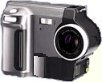

 Expanding on the capabilities of Pixal's DC100 digital camera, the DC250 supports photo resolutions of up to 1280x960. You can bring objects closer using the 3x digital zoom lens, standard on every DC250. The DC250 also includes built-in red-eye reduction, to remove red-eye problems in low-light situations.
The DC250 includes an 12 MB memory card that can hold up to 80 pictures at 640x480 resolution. You can insert an additional 12 MB of memory to store even more photos.